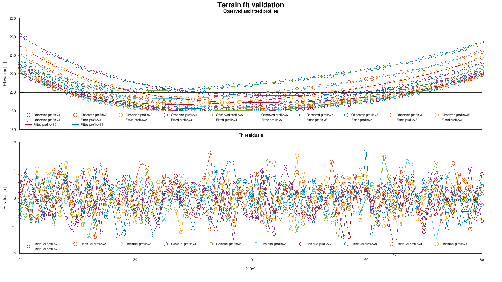
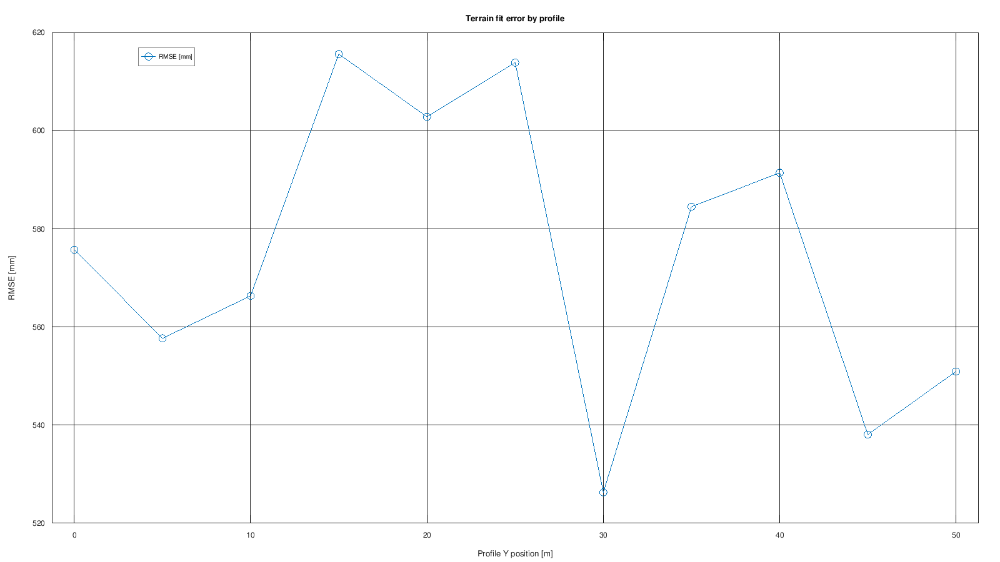

Target: GX-TXT 0.9.8.10-dev-097, Debian. Figures are actual scientific render artifacts from the verified development candidate, not GUI screenshots. Scientific/API/Script evidence is retained. Additional final GUI matrices: NOT RUN — USER-ACCEPTED. Frozen release/package acceptance remains pending; the final release receipt supplies archive identity.
Create a new Session and use Python Script Workspace. Register the supplied source files under their displayed names, select the listed Analysis Source bindings, and run each stage in order. Wait for its Job to complete before the next step. Keep the original source data intact. Save the Session normally; reopening uses its persistent scientific identities.
Run Terrain first; this workflow compares its actual persistent output with its actual source. Bind the documented model and summary aliases explicitly. A missing model binding and an incorrect summary Dataset are intentional rejection cases with useful messages and no scientific mutation. Revision 1.1.0 computes each statistical result through public Numeric services and passes those facts to CORE. A pointwise comparison does not estimate a new regression or establish independent validation. CORE therefore reports regression R²/inference as not applicable while retaining the descriptive centered comparison score. The historical validation.global_r2 metadata field remains for compatibility. Stacked panels now honor each family binding and never connect one profile to another.
SHA256 8a39f3304f2b246df3b83de10db285ac1e5ef206ce27161299de6fbef2f361c6SHA256 dffdb5cbb7f7958d5a8d8616f221aa018404809a5ac286a9f7ed94ac28915d3c| Script | Inputs | Result |
|---|---|---|
tutorial_residual_validate_dev097.py | primary → tutorial.terrain_profiles_raw; model → tutorial.terrain_surface_fit | Match exact XY coordinates, compute public numerical metrics and publish residual and profile-summary Datasets. |
02_plot_fit_validation_v3.py | primary → tutorial.terrain_fit_residuals; summary → tutorial.terrain_fit_profile_statistics | Create the two-panel family diagnostic and the profile-RMSE Variant. |
The retained observed-minus-predicted residuals give bias 1.5831306835364206e−13 m, MAE 0.46558340270549353 m, RMSE 0.5755625967901292 m and maximum absolute error 1.9941355027326324 m. The centered comparison score is 0.9987124806014481. All eleven profile rows retain 81 observations and match independent reductions within 1e−9. Every residual observation retains original source order, coordinates, profile identity and exact observed value.

1e2f0edcdba5953a6d67db59cc685ba229109bf1e8322d24cf1165cf6b8790fa. No historical screenshot is presented as new evidence.
a6ad388538dcfd1f189ff52a7751278f60e1a99a3e1c34a88f99d2e63c9d3a74. No historical screenshot is presented as new evidence.TABLE_STREAM_API_v3; DATASET_VARIABLE_SCHEMA_API_v3; DATASET_METADATA_API_v1; NUMERIC_API_v1; STATISTICAL_RESULT_SEMANTICS_API_v1; DATASET_PUBLICATION_API_v2; PLOT_DATASET_API_v3; SESSION_PERSISTENCE_API_v1
The complete validation Job took 28.713 s and both diagnostic plots took 27.107 s. The independent full workflow verifier took 13.621 s. Only the affected family diagnostic was refreshed after the renderer fix (16.776 s); no numerical work was repeated for that display correction.
Two expected rejection Jobs passed their negative checks; their actual Job state remains FAILED. Eight focused renderer checks cover numeric/text families, supported trace kinds, right-axis styles and existing single-panel behavior. Original faulty image/cache evidence is preserved.
Job completion alone does not certify scientific values or graph semantics. These guides include independent value checks and actual artifact inspection. Omitted GUI tests are never counted as PASS. A release verification manifest will identify the exact frozen source and package used for installation.